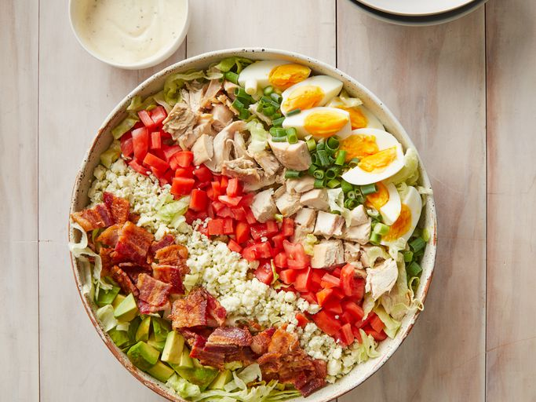

| Home | Multimedia | PDFS |
Cobb Salad

Description
with a bunch of color!, very attractive salad.
Prep Time: 20 mins
Cook Time: 10 mins
Total Time: 30 mins
Servings: 6
Ingredients
- Meat: This protein-packed Cobb salad calls for both bacon and chicken.
- Eggs: Boiled eggs lend even more protein to the hearty salad.
- Lettuce: Iceberg lettuce is the traditional choice for this classic dish.
- Tomatoes: Chopped fresh tomatoes lend flavor and color.
- Blue cheese: Crumbled blue cheese takes the flavor up a notch.
- Green onions: If you prefer a stronger flavor, use a red onion.
- Avocado: Cubed avocados make this salad even more filling.
- Dressing: Use store-bought ranch dressing or make your own at home.
Directions
Step 1
Boil, peel, and chop the eggs.
Step 2
Cook, drain, and crumble the bacon.
Step 3
Assemble the salad.
Step 4
Drizzle with dressing before serving.